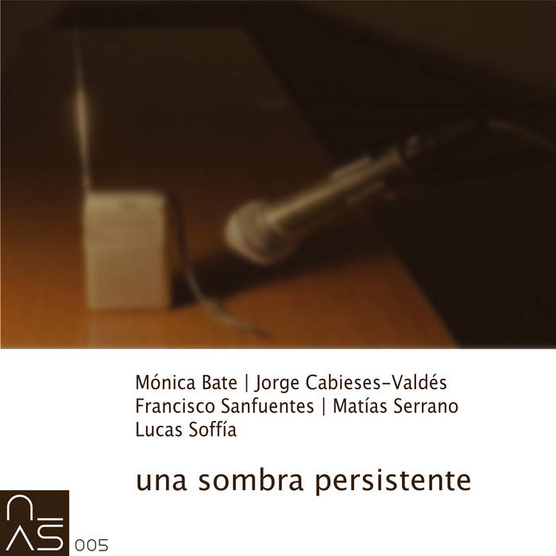

October, 2024

Work created together with Mónica Bate and Lucas Soffia for una sombra persistente
Recording of an acousmatic concert held on Wednesday, September 6, 2023, at noon, in the Auditorio de Las Encinas of the Departamento de Artes Visuales, Facultad de Artes, Universidad de Chile. The event, titled "Una sombra persistente", featured the sound artists Francisco Sanfuentes, Matías Serrano, Lucas Soffia, Mónica Bate and Jorge Cabieses-Valdés, and was part of a series of commemorative events marking the 50th anniversary of the Military Coup in Chile (1973).
1. Asintonía is a collective work generated from fragments of a cassette titled "guitarra cautiva" ("captive guitar"), recorded by Claudio Araya from public prison in January 1990, radio music from the 1980s, and soundscapes from the Las Encinas campus. These materials were mixed live using 2 radio transmitters, a receiver, and the movement of the three artists through different spaces of the campus.
2. Arte Negro y Paisaje sonoro (Black Art and Soundscape) is developed around the central role of a series of accounts of abuse and disappearance that are traces of the dictatorship and the decades that followed. The legal protocol of a lawyer investigating possible torture, a woman detained and imprisoned for her marginal condition — and therefore suspected of mistreating her daughter when she was simply ill — an imaginary journey through the Forensic Medical Institute where nameless bones are still kept. Sound is the landscape of latent darkness that attempts to hide.
3. Sin título (Untitled) is a composition performed using a Yamaha Electone organ whose model dates from 1973. It is a large wooden organ of the type that used to be found in some homes as a natural part of the furniture of that era.
Listen on Bandcamp